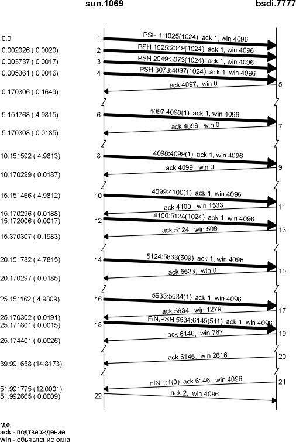

Глава 22 Устойчивый таймер TCP
Мы видели, что TCP получатель осуществляет управление потоком данных, указывая количество данных, которые он хочет получить от отправителя: размер окна. Что происходит, когда размер окна становится равным 0? Обычно это останавливает отправителя, который прекращает передавать данные до тех пор, пока размер окна станет ненулевым.
Именно так разворачивались события на рисунке 20.3. Когда отправитель получает сегмент 9, открывающий окно, которое было закрыто сегментом 8, он немедленно начинает посылать данные. TCP должен предпринять какие-либо действия в том случае, если подтверждение, открывающее окно (сегмент 9) было потеряно. Подтверждения передаются ненадежно - другими словами, TCP не подтверждает сами подтверждения, он подтверждает только сегменты, содержащие данные.
Если подтверждение потеряно, на каждом конце соединения будут ждать действий от удаленного конца: получатель ожидает получить данные (так как он отправил отправителю ненулевое окно), а отправитель надеется получить обновление окна, которое позволит ему продолжить передачу. Чтобы выйти из подобного тупика, отправитель использует устойчивый (persist) таймер, в соответствии с которым осуществляется периодический опрос получателя на предмет, не был ли увеличен размер окна. Сегменты, которые при этом посылает отправитель, называются пробами окна (window probes) . В этой главе мы рассмотрим пробы окна и устойчивый таймер. Также мы рассмотрим синдром "глупого окна", который непосредственно связан с устойчивым таймером.
Чтобы посмотреть, как работает устойчивый таймер, мы запустим принимающий процесс, который ожидает прихода запроса на соединение от клиента, принимает запрос на соединение, а затем на долго засыпает перед тем, как начать чтение из сети.
Программа sock позволяет установить паузу с помощью опции -P, при этом пауза вставляется между моментом, когда сервер принимает запрос на соединение, и моментом, когда будет осуществлено первое чтение. Мы запустим сервер следующим образом:
svr4 % sock -i -s -P100000 5555
После запуска этой команды сервер будет "спать" 100000 секунд (27,8 часов) перед тем, как начать читать из сети. Клиент запущен на хосте bsdi и осуществляет записи по 1024 байта на порт сервера 5555. На рисунке 22.1 показан вывод команды tcpdump. (Мы удалили все имеющее отношение к установлению соединения.)
1 0.0
bsdi.1027
> svr4.5555: P 1:1025(1024) ack 1 win 4096
2 0.191961 ( 0.1920) svr4.5555 > bsdi.1027: . ack 1025 win 4096
3 0.196950 ( 0.0050) bsdi.1027 > svr4.5555: . 1025:2049(1024) ack 1
win 4096
4 0.200340 ( 0.0034) bsdi.1027 > svr4.5555: . 2049:3073(1024) ack 1
win 4096
5 0.207506 ( 0.0072) svr4.5555 > bsdi.1027: . ack 3073 win 4096
6 0.212676 ( 0.0052) bsdi.1027 > svr4.5555: . 3073:4097(1024) ack 1
win 4096
7 0.216113 ( 0.0034) bsdi.1027 > svr4.5555: P 4097:5121(1024) ack 1
win 4096
8 0.219997 ( 0.0039) bsdi.1027 > svr4.5555: P 5121:6145(1024) ack 1
win 4096
9 0.227882 ( 0.0079) svr4.5555 > bsdi.1027: . ack 5121 win 4096
10 0.233012 ( 0.0051) bsdi.1027 > svr4.5555: P 6145:7169(1024) ack 1
win 4096
11 0.237014 ( 0.0040) bsdi.1027 > svr4.5555: P 7169:8193(1024) ack 1
win 4096
12 0.240961 ( 0.0039) bsdi.1027 > svr4.5555: P 8193:9217(1024) ack 1
win 4096
13 0.402143 ( 0.1612) svr4.5555 > bsdi.1027: . ack 9217 win 0
14 5.351561 ( 4.9494) bsdi.1027 > svr4.5555: . 9217:9218(1) ack 1 win
4096
15 5.355571 ( 0.0040) svr4.5555 > bsdi.1027: . ack 9217 win 0
16 10.351714 ( 4.9961) bsdi.1027 > svr4.5555: . 9217:9218(1) ack 1 win 4096
17 10.355670 ( 0.0040) svr4.5555 > bsdi.1027: . ack 9217 win 0
18 16.351881 ( 5.9962) bsdi.1027 > svr4.5555: . 9217:9218(1) ack 1 win 4096
19 16.355849 ( 0.0040) svr4.5555 > bsdi.1027: . ack 9217 win 0
20 28.352213 (11.9964) bsdi.1027 > svr4.5555: . 9217:9218(1) ack 1 win 4096
21 28.356178 ( 0.0040) svr4.5555 > bsdi.1027: . ack 9217 win 0
22 52.352874 (23.9967) bsdi.1027 > svr4.5555: . 9217:9218(1) ack 1 win 4096
23 52.356839 ( 0.0040) svr4.5555 > bsdi.1027: . ack 9217 win 0
24 100.354224 (47.9974) bsdi.1027 > svr4.5555: . 9217:9218(1) ack 1 win 4096
25 100.358207 ( 0.0040) svr4.5555 > bsdi.1027: . ack 9217 win 0
26 160.355914 (59.9977) bsdi.1027 > svr4.5555: . 9217:9218(1) ack 1 win 4096
27 160.359835 ( 0.0039) svr4.5555 > bsdi.1027: . ack 9217 win 0
28 220.357575 (59.9977) bsdi.1027 > svr4.5555: . 9217:9218(1) ack 1 win 4096
29 220.361668 ( 0.0041) svr4.5555 > bsdi.1027: . ack 9217 win 0
30 280.359254 (59.9976) bsdi.1027 > svr4.5555: . 9217:9218(1) ack 1 win 4096
31 280.363315 ( 0.0041) svr4.5555 > bsdi.1027: . ack 9217 win 0
Рисунок 22.1 Пример устойчивого таймера при пробах окна нулевого размера.
В сегментах 1-13 осуществляется обычная передача данных от клиента к серверу, при этом заполняется окно размером 9216 байт. Сервер объявил окно равное 4096 и имеет размер буфера сокета по умолчанию равный 4096, однако в действительности принимает 9216 байт. Это является формой взаимодействия между кодами TCP/IP и потоковой подсистемой в SVR4.
В сегменте 13 сервер подтверждает предыдущие четыре сегмента данных, однако объявляет окно равное 0, приостанавливая тем самым передачу данных от клиента. Клиент вынужден установить свой устойчивый таймер. Если клиент не получил обновление окна до истечения таймера, он осуществляет пробу пустого окно, чтобы проверить не было ли потеряно обновление окна. Так как процесс сервера спит, 9216 байт данных буферизированы TCP и ожидают, что будут переданы приложению.
Обратите внимание на промежутки времени между пробами окна, которые осуществляет клиент. Первая (сегмент 14) происходит через 4,949 секунды после получения окна нулевого размера. Следующая (сегмент 16) - через 4,996 секунды. Затем промежутки между пробами становятся приблизительно равными 6, 12, 24, 48 и 60 секунд после предыдущей пробы.
Почему промежутки всегда на какую-то долю секунды меньше чем 5, 6, 12, 24, 48 и 60? Пробы осуществляются в соответствии с 500-миллисекундным таймером TCP. Когда таймер истекает, отправляется проба окна, а отклик принимается примерно через 4 миллисекунды. Получение отклика, вновь устанавливает таймер, однако время до следующего тика часов составляет примерно 500 минус 4 миллисекунды.
При расчете устойчивого таймера используется обычное экспотенциальное наращивание TCP. Первый тайм-аут рассчитывается как 1,5 секунды для стандартного соединения по локальной сети. Затем это значение умножается на 2 для второго тайм-аута (значение равное 3 секундам). Множитель равный 4-м дает следующее значение равное 6, множитель равный 8-ми дает значение 12, и так далее. Однако, устойчивый таймер всегда находится в диапазоне между 5 и 60 секундами, и именно эти значения мы видим на рисунке 22.1.
Проба окна содержит 1 байт данных (номер последовательности 9217). TCP всегда позволяет послать 1 байт данных, после того как окно было закрыто. Однако подтверждения, возвращающиеся с номером окна равным 0, не подтверждают этот байт. (Эти ACK получены для всех байтов с номером меньше чем 9216, и на байт с номером 9216.) Поэтому, этот байт будет передан повторно.
Характеристика устойчивого состояния отличается от тайм-аутов при повторной передаче, описанных в главе 21, тем, что TCP никогда не прекращает отправку проб окна. Эти пробы окна отправляются с 60-секундными интервалами до тех пор, пока окно не будет открыто, или приложение решит, что соединение должно быть разорвано.
При использовании окон в схемах управления потоком данных (таких как используется в TCP) могут возникнуть условия известные как синдром "глупого" окна (SWS - silly window syndrome). В этом случае, по соединению, осуществляется обмен небольшим количеством данных вместо обмена сегментами полного размера [Clark 1982].
Причиной этого может стать любой участник обмена: получатель может объявить маленькие окна (вместо того чтобы дождаться возможности объявить большее окно), а отправитель может передавать маленькое количество данных (вместо того чтобы дождаться дополнительных данных и послать больший сегмент). Корректно избежать синдрома глупого окна можно на обоих концах соединения.
- Получатель не должен объявлять маленькие окна. Стандартный алгоритм определяет, что получатель не должен объявлять окно больше, чем объявлено в настоящий момент (которое может быть равным 0), до тех пор, пока окно не будет увеличено хотя бы на один сегмент полного размера (принятый MSS) или на половину размера буфера получателя, в зависимости от того, какое значение меньше.
- Отправитель может избежать синдрома
глупого окна, приостанавливая передачу, если
одно из следующих условий неверно: (a) может быть
отправлен сегмент полного размера, (b) можно
отправить по меньшей мере половину от
максимального размера окна, объявленного
удаленным концом, или (c) можно послать все что у
нас есть, а также мы не ожидаем подтверждения (нет
неподтвержденных данных), или для этого
соединения выключен алгоритм Нагла (глава 19,
раздел "Алгоритм Нагла").
Условие (b) имеет отношение к хостам, которые всегда объявляют очень маленькие окна, возможно даже меньше чем размер сегмента. Условие (c) позволяет избежать отправки маленьких сегментов, когда у нас есть неподтвержденные данные, которые ожидают того, чтобы быть подтвержденными, и включен алгоритм Нагла. Если приложение осуществляет маленькие записи (меньше чем размер сегмента), условие (c) позволяет избежать синдрома глупого окна.
Эти условия также позволяют ответить на вопрос: спасает ли алгоритм Нагла от отправки маленьких сегментов, пока существуют неподтвержденные данные и что означает слово "маленький"? Из условия (a) мы видим, что "маленький" означает - количество байтов меньше чем размер сегмента. Условие (b) имеет отношение только к старым, примитивным хостам.
Условие (b) в шаге 2 требует, чтобы отправитель отслеживал максимальный размер окна, объявленный удаленным концом. Здесь отправителем делается попытка догадаться о размере буфера получателя на удаленном конце. Несмотря на то, что размер буфера получателя может уменьшаться в процессе установления соединения, на практике это происходит редко.
Пример
Сейчас мы подробно рассмотрим, как можно избежать синдрома глупого окна и как работает устойчивый таймер. Мы воспользуемся программой sock с отправляющего хоста, sun, который сделает в сеть шесть записей размером 1024 байта:
sun % sock -i -n6 bsdi 7777
Принимающий процесс на хосте bsdi сделает несколько пауз, а именно, перед осуществлением первого считывания пауза продлиться 4 секунды, а между каждым следующим считыванием пауза составит 2 секунды. Получатель считывает данные по 256 байт:
bsdi % sock -i -s -P4 -p2 -r256 7777
Первая пауза позволяет заполнить буфер приемника, что заставляет его остановить передатчик. Так как получатель затем осуществляет маленькие считывания из сети, мы ожидаем, что получатель применит процедуру предотвращения синдрома глупого окна.
На рисунке 22.2 показана временная диаграмма для передачи 6144 байт данных. (Мы удалили все связанное с установлением соединения.)
Нам необходимо отследить следующее: что происходит с приложением, которое считывает данные в каждый момент времени, количество байт, находящихся в настоящий момент в приемном буфере, и размер свободного пространства в приемном буфере (в байтах). На рисунке 22.3 приведены эти данные.

Рисунок 22.2 Временная диаграмма, показывающая, как получатель предотвращает появление синдрома глупого окна.
Время |
Номер сегмента |
Действие |
Буфер приемника |
|||
(рисунок 22.2) |
Отправляющий TCP |
Принимающий TCP |
Приложение |
данные |
свободно |
|
| 0,000 | 1 |
1:1025(1024) |
1024 |
3072 |
||
| 0,002 | 2 |
1025:2049(1024) |
2048 |
2048 |
||
| 0,003 | 3 |
2049:3073(1024) |
3072 |
1024 |
||
| 0,005 | 4 |
3073:4097(1024) |
4096 |
0 |
||
| 0,170 | 5 |
ACK 4097, win 0 |
||||
| 3,99 | читает 256 |
3840 |
256 |
|||
| 5,151 | 6 |
4097:4098(1) |
3841 |
255 |
||
| 5,17 | 7 |
ACK 4098, win 0 |
||||
| 5,99 | читает 256 |
3585 |
511 |
|||
| 7,99 | читает 256 |
3329 |
767 |
|||
| 9,99 | читает 256 |
3073 |
1023 |
|||
| 10,151 | 8 |
4098:4099(1) |
3074 |
1022 |
||
| 10,170 | 9 |
ACK 4099, win 0 |
||||
| 11,99 | читает 256 |
2818 |
1278 |
|||
| 13,99 | читает 256 |
2562 |
1534 |
|||
| 15,151 | 10 |
4099:4100(1) |
2563 |
1533 |
||
| 15,170 | 11 |
ACK 4100, win 1533 |
||||
| 15,172 | 12 |
4100:5124(1024) |
3587 |
509 |
||
| 15,370 | 13 |
ACK 5124, win 509 |
||||
| 15,99 | читает 256 |
3331 |
765 |
|||
| 17,99 | читает 256 |
3075 |
1021 |
|||
| 19,99 | читает 256 |
2819 |
1277 |
|||
| 20,151 | 14 |
5124:5633(509) |
3328 |
768 |
||
| 20,170 | 15 |
ACK 5633, win 0 |
||||
| 21,99 | читает 256 |
3072 |
1024 |
|||
| 23,99 | читает 256 |
2816 |
1280 |
|||
| 25,151 | 16 |
5633:5634(1) |
2817 |
1279 |
||
| 25,170 | 17 |
ACK 5634, win 1279 |
||||
| 25,171 | 18 |
5634:6145(511) |
3328 |
768 |
||
| 25,174 | 19 |
ACK 6146, win 767 |
||||
| 25,99 | читает 256 |
3072 |
1024 |
|||
| 27,99 | читает 256 |
2816 |
1280 |
|||
| 29,99 | читает 256 |
2560 |
1536 |
|||
| 31,99 | читает 256 |
2304 |
1792 |
|||
| 33,99 | читает 256 |
2048 |
2048 |
|||
| 35,99 | читает 256 |
1792 |
2304 |
|||
| 37,99 | читает 256 |
1536 |
2560 |
|||
| 39,99 | читает 256 |
1280 |
2816 |
|||
| 39,99 | 20 |
ACK 6146, win 2816 |
||||
| 41,99 | читает 256 |
1024 |
3072 |
|||
| 43,99 | читает 256 |
768 |
3328 |
|||
| 45,99 | читает 256 |
512 |
3584 |
|||
| 47,99 | читает 256 |
256 |
3840 |
|||
| 49,99 | читает 256 |
0 |
4096 |
|||
| 51,99 | читает 256 (EOF) |
0 |
4096 |
|||
| 51,991 | 21 |
ACK 6146, win 4096 |
||||
| 51,992 | 22 |
ACK 2 |
||||
Рисунок 22.3 Как получатель избавляется от синдрома глупого окна.
В первой колонке на рисунке 22.3 приводится относительный момент времени соответствующий каждому действию. Величины времени с тремя цифрами справа от десятичной точки взяты из вывода команды tcpdump (рисунок 22.2). Величины времени со значением 99 справа от десятичной точки - это предполагаемая продолжительность функционирования принимающего хоста. (Наличие этих относительных времен на принимающем конце и содержащих 99 в позиции сотых долей секунд указывает на их взаимосвязь с сегментами 20 и 22 на рисунке 22.2, только два события на приемнике, которые мы видим в выводе команды tcpdump, произошли на принимающем хосте по тайм-ауту. Все другие пакеты, отправленные bsdi, отправлены по приему сегмента от отправителя. Также необходимо принять во внимание, что это могло бы поместить исходную 4-секундную паузу непосредственно перед моментом времени 0, когда отправитель передает первый сегмент данных. Это примерно тогда, когда получатель берет управление после приема подтверждения на свой SYN при установлении соединения.)
Размер буфера приемника увеличивается, когда он получает данные от получателя, и уменьшается, когда приложение считывает данные из буфера. Нам необходимо проследить за объявлениями окна, которые отправляются получателем отправителю, и за тем, что содержат эти объявления окна. Таким образом, мы можем увидеть, как получатель избегает синдрома глупого окна.
Первые четыре сегмента данных и соответствующие ACK (сегменты 1-5) показывают, что отправитель заполнил буфер приемника. В этой точке отправитель останавливается, однако у него все еще остались данные, которые необходимо отправить. Он устанавливает свой устойчивый таймер в минимальное значение равное 5 секундам.
Когда таймер истек, посылается 1 байт данных (сегмент 6). Принимающее приложение считало 256 байт из приемного буфера (в момент времени 3,99), таким образом, байт принимается и подтверждается (сегмент 7). Однако, объявленное окно все еще равно 0, так как у приемника нет места равного одному сегменту полного размера или половине своего буфера. Именно таким образом, получатель избегает появления синдрома глупого окна.
Устойчивый таймер отправителя сбрасывается и устанавливается снова через 5 секунд (момент времени 10,151). Снова отправляется и подтверждается один байт (сегменты 8 и 9). И снова, размер свободного места в буфере приемника (1022 байта) заставляет его объявить окно равное 0.
Когда устойчивый таймер отправителя истекает в следующий раз (в момент времени 15,151), отправляется и подтверждается еще один байт (сегменты 10 и 11). В это время получатель имеет в буфере 1533 байта свободного пространства, поэтому объявляется окно ненулевого размера. Отправитель немедленно пользуется этим и отправляет 1024 байта (сегмент 12). Подтверждение на эти 1024 байта (сегмент 13) объявляет окно равное 509 байт. Это противоречит тому, что мы видели раньше с объявлениями маленьких окон.
Здесь произошло следующее: сегмент 11 объявил окно размером 1533 байта, однако отправитель отправил только 1024 байта. Если подтверждение в сегменте 13 объявит окно равное 0, это будет противоречить принципу TCP, который заключается в том, что окно не может изменяться путем перемещения его правого края влево (глава 20, раздел "Изменение размера окна"). Именно поэтому должно быть объявлено маленькое окно размером в 509 байт.
Затем необходимо обратить внимание на то, что отправитель отправляет это маленькое окно не сразу. Это уже меры, которые принимает отправитель, чтобы избавиться от синдрома глупого окна. Отправитель ожидает истечения еще одного устойчивого таймера (момент времени 20,151) и только тогда посылает 509 байт. Даже если все равно отправляется маленький сегмент размером 509 байт данных, отправитель ожидает 5 секунд, чтобы посмотреть, не придет ли ACK и не объявит ли большее окно. После прихода 509 байт данных в буфере приемника остается всего лишь 768 байт свободного места, поэтому подтверждение (сегмент 15) объявляет окно равное 0.
Устойчивый таймер снова включается в момент времени 25,151, а отправитель передает 1 байт. В буфере получателя этот момент 1279 байт свободного пространства, окно такого размера объявляется в сегменте 17.
Отправителю необходимо отправить только 511 дополнительных байт, которые он немедленно отправляет после получения объявления окна размером 1279 байт (сегмент 18). Этот сегмент также содержит флаг FIN. Получатель подтверждает данные и FIN, объявляя окно размером 767. (См. упражнение 2 в конце главы.)
Так как отправляющее приложение выдало сигнал закрытия, после того как сделало шесть записей размером 1024 байта, соединение со стороны отправителя переходит из состояния ESTABLISHED в состояние FIN_WAIT_1, затем в состояние FIN_WAIT_2 (рисунок 18.12).
Оно остается в этом состоянии до получения FIN с удаленного конца. Для этого состояния не существует таймера (обратитесь к нашему обсуждению в конце раздела "Диаграмма состояний передачи TCP" главы 18), поэтому FIN, который был отправлен в сегменте 18, подтверждается в сегменте 19. Именно поэтому мы не видим дальнейшей передачи от отправителя до тех пор, пока он не получил FIN (сегмент 21).
Получающее приложение продолжает читать 256 байт данных каждые 2 секунды из приемного буфера. Почему ACK отправлен в момент времени 39,99 (сегмент 20)? Размер свободного места в буфере получателя увеличился с момента последнего объявления окна размером 767 (сегмент 19) до 2816, когда приложение осуществило чтение в момент времени 39,99. Таким образом, в приемном буфере появилось 2049 байт свободного пространства. Обратитесь к первому правилу, с которого мы начали этот раздел, в соответствии с которым получатель отправляет обновление окна, потому что количество свободного места увеличилось на величину, равную половине размера приемного буфера. Это означает, что получающий TCP каждый раз проверяет, нужно ли послать обновления окна, когда приложение считывает данные из приемного буфера TCP.
Последнее чтение, осуществленное приложением, происходит в момент времени 51,99, и приложение получает уведомление о конце файла, так как буфер пуст. Два последних сегмента (21 и 22) завершают разрыв соединения.
Устойчивый таймер TCP устанавливается одним концом соединения, когда у него есть данные, которые необходимо отправить, однако отправка была остановлена, потому что другой конец соединения объявил окно нулевого размера. Отправитель отправляет пробы окна, при этом интервал повторной передачи рассчитывается так, как это делалось в главе 21. Отправка проб закрытого окна продолжается постоянно.
С помощью примеров, работы устойчивого таймера, мы видели, как TCP борется с синдромом глупого окна. Это необходимо для того, чтобы предотвратить объявление маленьких окон или отправку маленьких пакетов. В примерах мы видели, как происходит предотвращение синдрома глупого окна на обоих концах, то есть у отправителя и получателя.